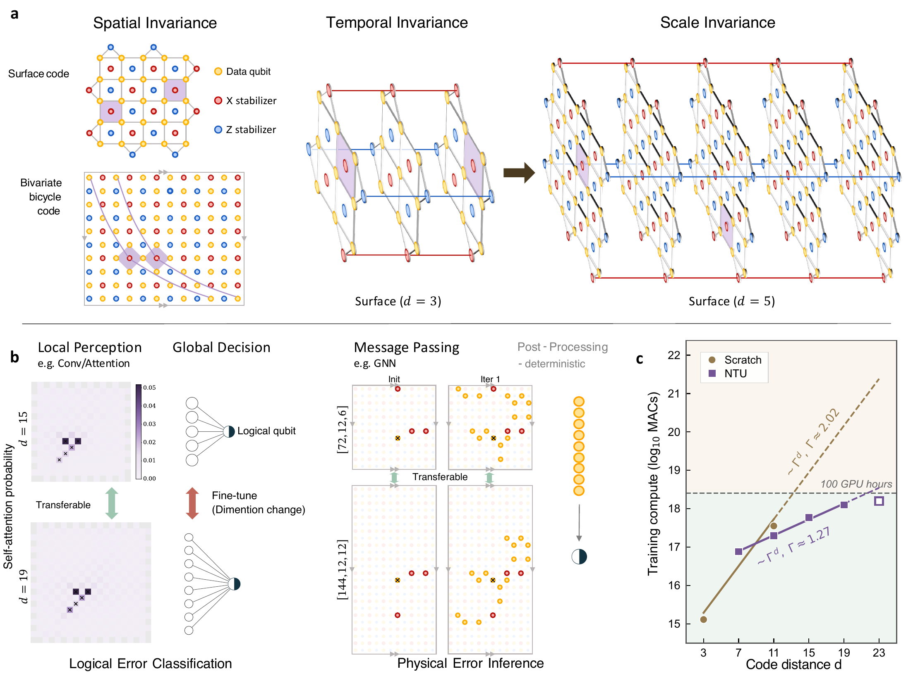
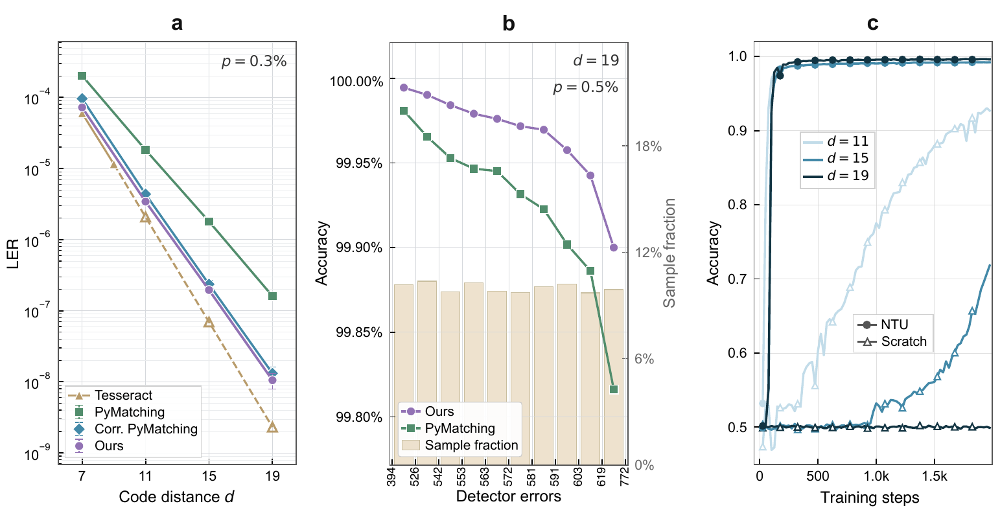
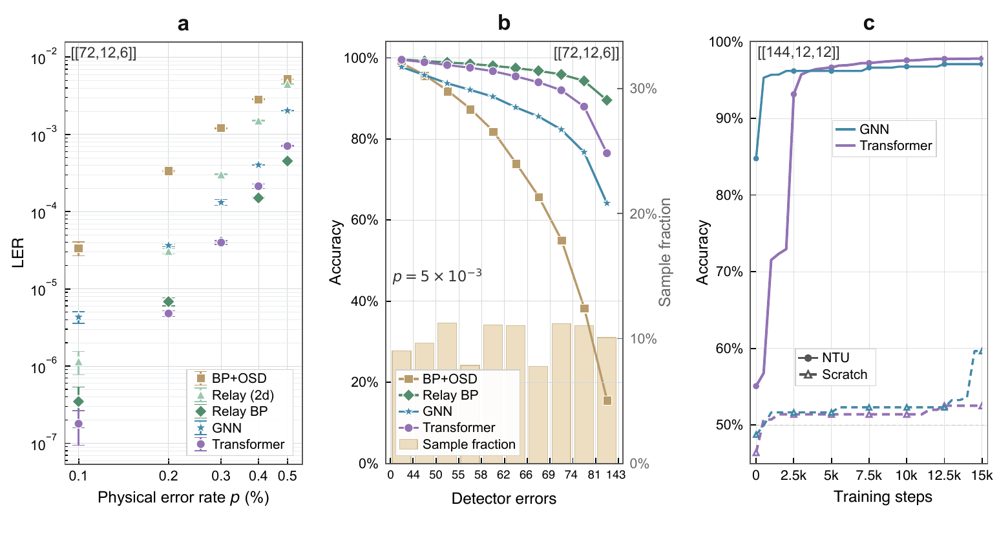
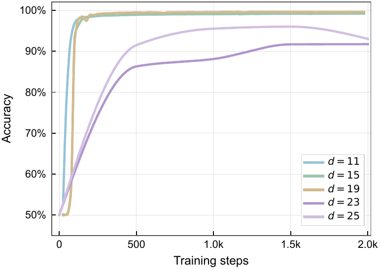
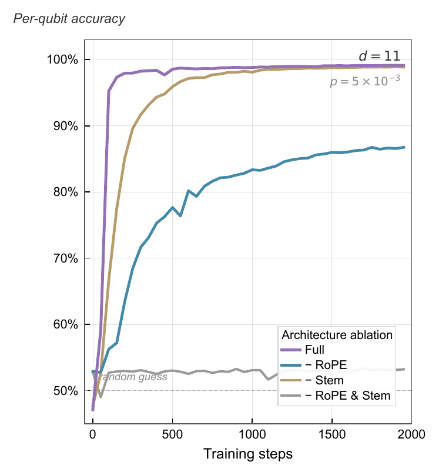
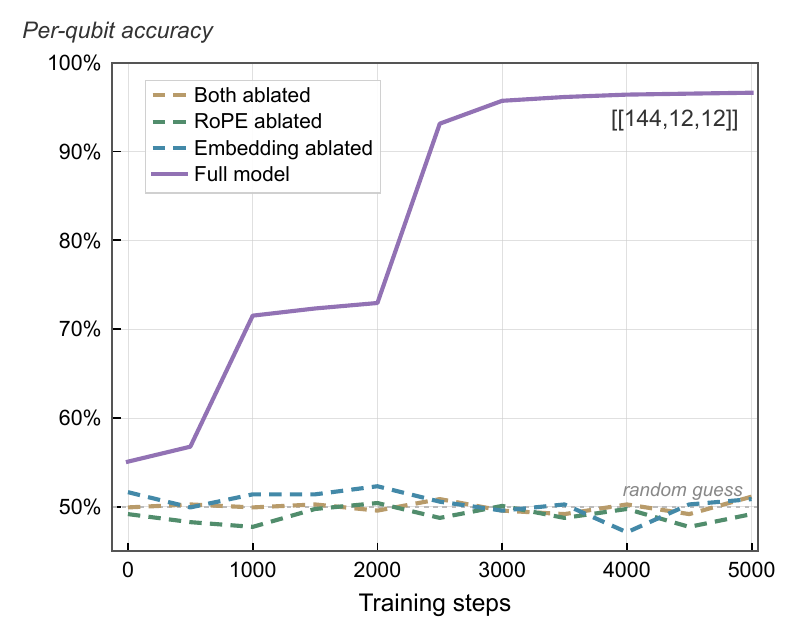

Algebraic neighborhoods
Syndrome detectors are indexed by spatiotemporal monomials such as x^i y^j t^k. Their recurring local neighborhood is represented by N(v) = v M(x,y,t), independent of global lattice size.
Neural Transfer Unification for quantum error correction
Foundation neural decoders can be accurate at large code distances, but training every target distance from scratch is expensive. NTU aligns decoding tasks through the algebraic local invariances shared by scalable code families, allowing representations learned on smaller codes to seed larger decoders.
The scaling bottleneck
Fault-tolerant quantum computers continuously produce noisy syndrome measurements. A decoder must transform those measurements into a correction or a logical-error prediction before new errors accumulate. High-capacity neural decoders can learn this map directly from data, and recent foundation decoders have made neural decoding competitive with leading algorithmic baselines.
The practical obstacle is scaling. Increasing the code distance expands the spatiotemporal syndrome volume, raises the cost of data generation, and makes optimization harder. Training a fresh model for every target distance therefore wastes the information already learned on smaller, tractable codes.
NTU changes the training unit. Instead of treating each distance as a separate task, it treats a scalable code family as a sequence of aligned tasks that share the same local algebraic error motifs.
Detector events arrive across space and repeated measurement rounds.
Local motifs are indexed by algebraic shifts rather than absolute size.
Only the expanded global readout needs efficient target-side tuning.
Structural isomorphism
The paper's central observation is that scalable QEC families preserve local algebraic structure while the global boundary grows. NTU maps this physical invariance into the neural representation space.
Syndrome detectors can be indexed by a generalized spatiotemporal
polynomial coordinate system. A detector coordinate has the form
v = x^i y^j t^k, where x and y
represent spatial translations and t represents syndrome
extraction rounds.
Under this view, the relative topological shift between two detectors is independent of the global code boundary. The local neighborhood of a detector is written as an invariant motif:
For the rotated surface code this motif is the familiar local planar stabilizer pattern. For BB codes it is induced by compact bivariate polynomials over cyclic group rings. The macroscopic visualization is different, but the reusable local indexing principle is the same.

Syndrome detectors are indexed by spatiotemporal monomials such as x^i y^j t^k. Their recurring local neighborhood is represented by N(v) = v M(x,y,t), independent of global lattice size.
The learnable update uses relative algebraic shifts. STEM and geometry-aware RoPE keep identical local motifs aligned when the surface-code lattice or BB-code torus expands.
A decoder trained on a small source distance initializes the larger target decoder. Fine-tuning mainly adapts scale-dependent global readout layers instead of relearning local error physics.
NTU-Transformer
STEM aggregates explicit topological neighbors and groups them by algebraic relation: same-type, cross-type, and temporal predecessor detectors. The embedding vocabulary therefore refers to physical neighborhood roles, not arbitrary flattened indices.
NTU avoids normalizing coordinates by the expanding code size. RoPE instead encodes unnormalized relative algebraic shifts, preserving the phase pattern of local attention when the lattice grows.
Physical error inference can scatter local features back to data qubits through the invariant Tanner graph. Logical error classification needs a scale-dependent global decision layer, so transfer is followed by lightweight fine-tuning.
NTU is architecture-agnostic, but the paper instantiates it as NTU-Transformer for planar surface codes and bivariate bicycle codes. The architecture deliberately separates the reusable local perception backbone from the target-specific global decision stage.
This separation is what removes the large-distance cold start. The transferred checkpoint already knows how local detector patterns relate to physical error mechanisms; target training mainly adapts to the enlarged boundary and the final logical observable.
Interactive
A browser-side toy model of the paper's transfer mechanism. The points are synthetic, but the controls reflect the NTU story: preserve the local algebraic motif, then compare transfer initialization with scratch training as the code distance grows.
Experiments
The experiments test whether the structural alignment actually improves decoding and training dynamics under circuit-level depolarizing noise.
Planar surface code
Surface-code experiments use a standard Z-basis memory task with
exactly d syndrome extraction rounds. The transferred
NTU-Transformer is first trained on d = 7, then sequentially
initialized and fine-tuned at larger distances.
At p = 0.3%, NTU-Transformer significantly outperforms
standard PyMatching and approaches the correlated matching baseline.
The detector-error binning shows the important failure mode: matching
methods degrade in high-weight, highly degenerate regimes, while the
neural decoder remains more accurate.
The training plot isolates the transfer advantage. Scratch-initialized large-distance models can remain near random guessing for thousands of steps. Transfer initialization bypasses this collapse and produces an immediate lift-off.

Bivariate bicycle codes
BB codes are quasi-cyclic quantum LDPC codes with non-local hypergraph
structure. NTU transfers from the [[72,12,6]] base code to
the expanded [[144,12,12]] lattice by preserving the
polynomial-induced neighborhood alignment.
On the base code, the global NTU-Transformer outperforms BP+OSD and advanced Relay-BP variants across the tested physical error rates. In the high detector-error regime, it remains more stable than traditional belief-propagation heuristics.
Scaling to [[144,12,12]] is the stress test. Scratch
Transformer and GNN models stagnate near random guessing, while
transferred models rapidly realign to the larger cyclic boundary.




Reference
@misc{yan2026efficientfoundationdecoders,
title = {Efficient foundation decoders for fault-tolerant quantum computing},
author = {Yan, Ge and Li, Shanchuan and Xiao, Shiyi and Ma, Pengyue and Cao, Hanyan and Pan, Feng and Du, Yuxuan},
year = {2026}
}